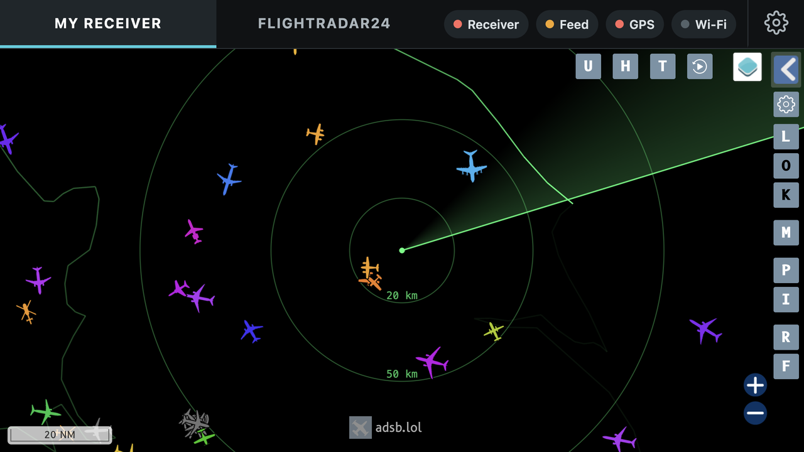

Flight Radar gift box · sheet 1 of 5 · print at 100% (actual size), not "fit to page"
Flight Radar gift box · sheet 2 of 5 · print at 100% (actual size), not "fit to page"

FLIGHTRADAR24
The whole world
The famous worldwide flight map, always on.
Every flight on Earth, live.
Follow any flight, anywhere.
MY RECEIVER
Your own patch of sky
Your own built-in antenna listens to the aircraft overhead and shows them here.
And feed that data back to Flightradar24 to get the contributor subscription FREE.
Back · 255 × 135 mm
Flight Radar gift box · sheet 3 of 5 · print at 100% (actual size), not "fit to page"
Flight Radar gift box · sheet 4 of 5 · print at 100% (actual size), not "fit to page"
Base (bottom) · 255 × 105 mm
Flight Radar gift box · sheet 5 of 5 · print at 100% (actual size), not "fit to page"
Right side · 105 × 135 mm